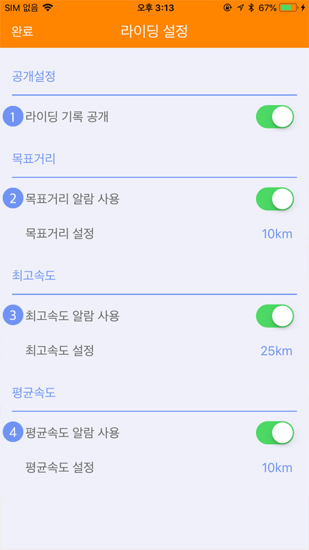
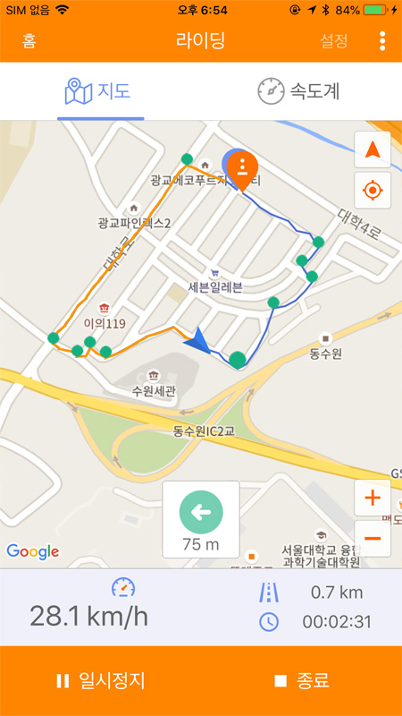

5. 라이딩
5.1 라이딩
* 자전거 라이딩 중에 화면을 보게 되면 사고 위험이 있습니다. 필히 정지 후 화면을 확인하시기 바랍니다.

‘라이딩 버튼’을 클릭하여 라이딩 화면으로 이동합니다.
* 도난방지 모드일 때는 라이딩 화면으로 이동할 수 없습니다.
‘시작' 버튼을 클릭하면 라이딩이 시작되고 트래킹을 시작합니다.

우측 상단의 설정버튼을 클릭하면 라이딩 옵션을 설정할수 있습니다.
① 라이딩 설정 : 자동일시정지는 자전거가 멈추었을때 앱상의 자동일시정지 기능의 사용여부를 설정합니다. 자동공개는 라이딩 목록을 자동으로 공개 여부를 설정합니다. ② 목표거리알람 : 원하는 목표거리를 설정하고 설정값이 되면 알람이 울리도록 합니다. ③ 최고속도알람 : 라이딩중 최고속도를 설정하고 설정값에 도달하면 알람이 울리도록 합니다. ④ 평균속도알람 : 라이딩중 평균속도를 설정하고 설정값이 도달하면 알람이 울리도록 합니다.
라이딩이 시작되면 위와 같이 화면이 변경되고 ‘종료'버튼을 클릭하면 라이딩이 종료되며 트래킹 정보는 서버에 저장됩니다.
① 현재위치 : 자신의 현재 위치와 방위를 표시합니다.
② 트래킹 경로 : 자신이 지나온 경로를 표시합니다.
③ 방위 변경 : 일 때는 자신이 바라보는 방향으로 지도가 변경되고  일 때는 지도가 항상 북쪽을 향합니다.
④ 나의 위치: 현재위치를 지도 중앙에 계속 표시하려면 ‘나의 위치'
일 때는 지도가 항상 북쪽을 향합니다.
④ 나의 위치: 현재위치를 지도 중앙에 계속 표시하려면 ‘나의 위치'  버튼을 클릭하면 됩니다.
⑤ 확대/축소: 지도를 확대하거나 축소할 수 있습니다.
⑥ 알림아이콘 : 설정값에 도달하면 알림이 뜹니다. 목표거리/평균속도/최고속도 순
⑦ 속도: 현재 속도를 표시합니다.
⑧ 거리: 라이딩 한 거리를 표시합니다.
⑨ 시간: 라이딩 한 시간을 표시합니다.
버튼을 클릭하면 됩니다.
⑤ 확대/축소: 지도를 확대하거나 축소할 수 있습니다.
⑥ 알림아이콘 : 설정값에 도달하면 알림이 뜹니다. 목표거리/평균속도/최고속도 순
⑦ 속도: 현재 속도를 표시합니다.
⑧ 거리: 라이딩 한 거리를 표시합니다.
⑨ 시간: 라이딩 한 시간을 표시합니다.
라이딩 중 속도계탭으로 이동하면 속도계 모드로 확인할수 있습니다.
① 현재 라이딩 한 시간을 나타냅니다 ② 속도를 나타내는 부분이며 평균속도와 최고속도를 같이 보여줍니다. 하단의 숫자는 목표로 설정한 값을 나타냅니다. ③ 거리관련된 수치를 보여주는 부분이며 현재거리, 설정목표거리, 고도, 경사도순입니다.
라이딩중 앱이 종료되어 라이딩이 의도하지 않게 정지되었을 경우 앱을 다시 실행하여 라이딩 화면으로 전환하면 라이딩을 이어서 하거나 종료할 수 있습니다.
라이딩 종료 중 스마트폰의 통신상태가 불안정하여 트래킹정보가 업로드에 실패하였어도 통신상태가 양호할 때 라이딩화면으로 진입하면 업로드를 재개할 수 있습니다.
5.2 경로 설정 및 따라가기
라이딩화면의 우측상단의 ‘경로 가져오기'를 통해서 경로보관함의 목록을 볼 수 있습니다.
* 그룹라이딩에서는 해당 메뉴를 사용 할 수 없습니다.
목록에서 경로를 선택합니다.
경로가 선택되면 지도에 따라갈 수 있는 경로와 출발지 및 목적지가 표시됩니다.
경로에서 녹색점은 알람이 표시되는 곳이며 알람지점 근처에 도달했을때 팝업 메시지로 표시됩니다.